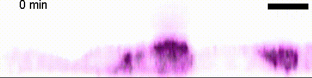
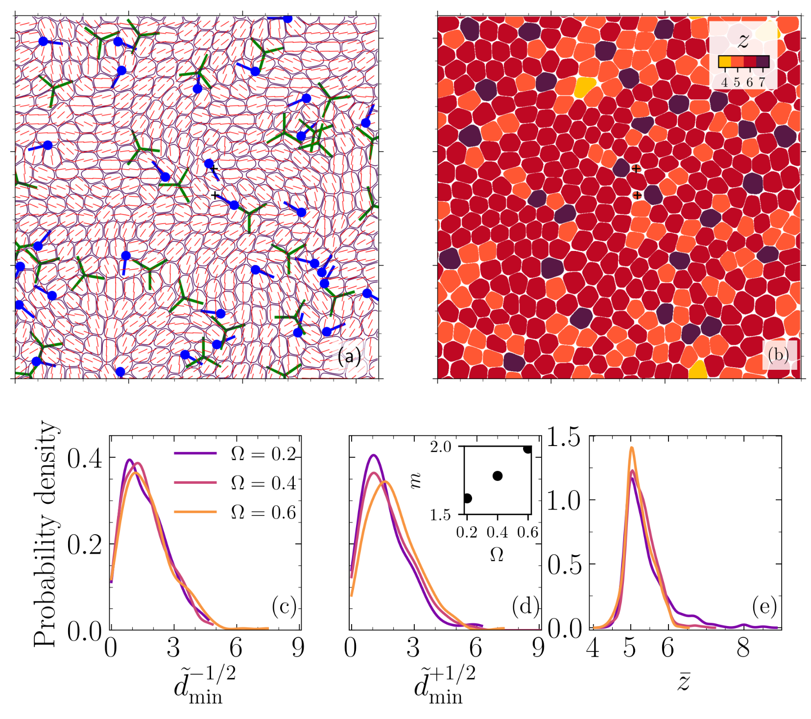
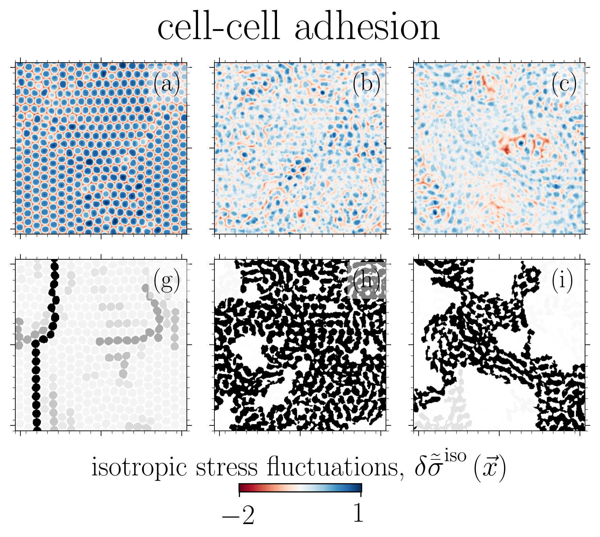
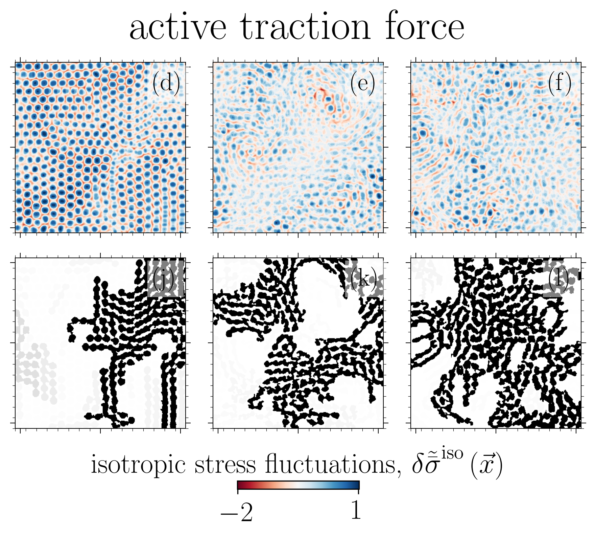
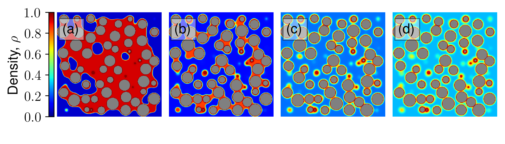
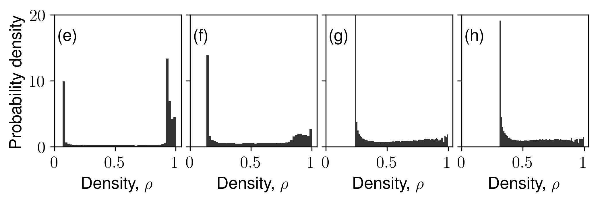

Siavash Monfared
Science and AI Venture Origination at Flagship Pioneering. Previously Postdoc at the Niels Bohr Institute, University of Copenhagen and California Institute of Technology. Visiting Scholar at Harvard University. PhD and SM from Massachusetts Institute of Technology, BS from University of Oklahoma.
Recent News
Invited Review Article Published in Annual Review of Condensed Matter Physics
Our invited review article on the latest advancements in multi-phase-field modeling of biological tissues is now published. This comprehensive review focuses on how physics-based models complement experimental data to provide mechanistic insights into collective cell dynamics, tissue mechanics, and force transmission in dense, soft tissues. The multiphase-field framework bridges biological phenomena with the nonequilibrium physics of active matter, with applications ranging from cell migration and metastasis to tissue development and regeneration.
Reference: S. Monfared, A. Ardaševa, A. Doostmohammadi, "Multiphase-Field Models of Tissues", Annual Review of Condensed Matter Physics, 2025.
View publication | PDFAward from French Académie des sciences
Our paper on "Force transmission is a master regulator of mechanical cell competition", Nature Materials, 2025, wins the 'Les Grandes Avancées en Biologie' from French Académie des sciences!
View publicationNature Materials Publication on Cell Competition
Cell competition maintains tissue health through the elimination of cellular sub-populations with reduced fitness. By combining in-vitro experiments with in-silico modeling, our study challenges the common belief that winning cells always expel others through squeezing. We show that cells can remain compressed and still emerge as winners by unraveling the functional basis of a novel mechanism due to force transmission capability of the competing cells.

Reference: A. Schoenit (1st co-author), S. Monfared (1st co-author), L. Anger (1st co-author), et al. "Force transmission is a master regulator of mechanical cell competition", Nature Materials, 2025.
View publicationMulti-phase-field Models Review Published
The development of complex multicellular organisms from a single parent cell is a highly orchestrated process that cells conduct collectively without central guidance. This review focuses on dense, soft multicellular systems where mechanical deformation of one cell necessitates the re-organization of neighboring cells. The multi-phase-field model offers a rich physics-based framework to advance our understanding of biological systems.
Reference: S. Monfared, A. Ardaševa, A. Doostmohammadi, "Multi-phase-field Models of Biological Tissues", arXiv, 2025.
Read the full preprintNature Physics Publication on Cell Extrusion
This manuscript presents a novel connection between stress transmission capability modulated via reduced cell-cell adhesion and changes in the mode of cell extrusion (live vs dead). Understanding the direction of extrusion (apical vs. basal) can reveal critical insights into tissue health and invasion.

Reference: L. Balasubramaniam (1st co-author), S. Monfared (1st co-author), et al. "Dynamic forces shape the survival fate of eliminated cells", Nature Physics, 2025.
View publicationStress Chains in Active Matter
Our study is one of the first on spatial correlation and organization of stress chains in dense, squishy active matter. An intriguing outcome is the encoding of mechanical information in the studied stress chains, given that distinct underlying mechanisms for different control parameters manifests in a similar stress scaling near the solid-to-liquid transition.

Reference: S. Monfared, G. Ravichandran, J.E., Andrade, A. Doostmohammadi, "Short-range correlation of stress chains near solid-to-liquid transition in active monolayers", The Journal of Royal Society Interface, 2024.
View publicationActive Force Generation Due to Proliferation
Although the expanding nature of cellular systems is central to their biological functions, the majority of approaches to study this topic are constrained to systems that conserve volume and/or mass and focus on active force generation due to cell motility. This latest development allows us to study active force generation due to proliferation, relaxing conservation of mass/volume. Proliferation in soft, dense living matter necessitates deformation and re-organization that can create a feedback loop crucial to development and regeneration.
eLife Publication - Cell Elimination Mechanisms
By developing a three-dimensional model and large scale simulations, we show that cells can switch between distinct mechanical pathways – leveraging defects in nematic and hexatic orders – to eliminate unwanted cells. Our findings provide a unique perspective on how through collective self-organization, cells exploit mechanical and physical constraints to switch between different modes of cell elimination.

Press coverage: Caltech News, Phys.org
Reference: S. Monfared, G. Ravichandran, J.E., Andrade, A. Doostmohammadi, "Mechanical basis and topological routes to cell elimination", eLife, 2023.
View publicationGlass-to-Liquid Transition in Active Cell Layers
The solid (glass-like) to liquid phase transition in cellular systems is relevant to a range of biological processes including cancer metastasis, wound healing and tissue morphogenesis. Using two distinct paths to model this transition based on (i) cell-cell adhesion and (ii) active traction, we link this phase transition to the emergent isotropic stress patterns and their percolation in active cell layers. For each path, we map this phase transition onto the 2D site percolation universality class.


Reference: S. Monfared, G. Ravichandran, J.E., Andrade, A. Doostmohammadi, "Stress percolation criticality of glass to fluid transition in active cell layers", arXiv, 2022.
View preprint3D Out-of-Plane Stresses in Cellular Layers
Our work is the first to map and reveal the importance of 3D out-of-plane stresses in cellular layers. Our findings on the distinct roles of topological defects and disclinations provide a unique perspective on how through collective self-organization, cells exploit mechanical and physical constraints to switch between different modes of cell elimination. The framework presented allows for independent tuning of cell-cell and cell-substrate interaction forces, opening the door to a new set of questions in mechanobiology.

Reference: S. Monfared, G. Ravichandran, J.E., Andrade, A. Doostmohammadi, "Mechanics of live cell elimination", arXiv, 2021.
View preprintPhysical Review Letters - Capillary Phase Transition
This paper advances understanding on confined fluid behavior in (dis)ordered granular aggregates and their inverse porous structures. For the first time, we unravel the link between surface-surface correlations to the degree of confinement while addressing long-standing questions on the first-order nature of liquid-gas phase transition and whether capillary critical temperature represents a true critical temperature. We link the underlying random fields to disorder in local fluid-solid interactions.


Reference: S. Monfared, T. Zhou, J.E., Andrade, K. Ioannidou, F. Radjai, F.-J. Ulm, R. J.-M. Pellenq, "Effect of confinement on capillary phase transition in granular aggregates", Physical Review Letters, 2020.
View publicationContact
Get in touch for research collaborations or questions about my work.